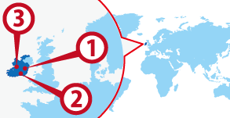

Dublin
Dublin Cork
Cork Galway
Galway
ワーホリ協定国一覧へ戻る

アイルランド人気都市 BEST3
アイルランド基本情報
| 首都 | Dublin |
|---|---|
| 言語 | Gaeilge, English |
| 面積 | 70,273 km²(世界121位) |
| 人口 | 4,958,264人(世界124位) |
| 通貨 | Euro（EUR） |
＊2020 年11 月時点の数値です
| 日本時間 | Dublin |
|---|---|
 1月1日 09:00am |
1月1日 01:00am |
＊サマータイムの期間は時差が変動します
| 首都 | Dublin |
|---|---|
| 面積 | 70,273km²(世界121位) |
| 人口 | 4,958,264人(世界124位) |
| 言語 | Gaeilge, English |
|---|---|
| 通貨 | Euro（EUR） |
|
＊2020 年11 月時点の数値です |
|
日本との時差
| 日本時間 | Dublin |
|---|---|
|
1月1日 09:00am |
1月1日 01:00am |
＊サマータイムの期間は時差が変動します
アイルランドってどんな国？
国土のほとんどが牧草地で、エメラルドの島と呼ばれています。現地の人たちは主食がポテトというほどポテトを買い、立ち飲みで入りやすいアイリッシュパブでもチップス（フレンチフライ）とギネスビール（黒ビール）で友達と集まることが多いです。アイリッシュパブ発祥の地で、パブの歴史的が非常に深く、ソーシャライズする場、意味は地元の友達を作ったり初めての人と知り合ったりする場として全土にそして世界的にも広がっています。そこではバンドやアンプラグドのライブが行われるのもアイリッシュパブの特徴です。ライブでは人気のある曲は店内がカラオケ状態になるほど全員が歌い出します。アイルランド国内ではどこでものんびりとした田舎暮らしを堪能することができ、その気候や文化から発展した英語は独自のアクセントがあります。また、ヨーロッパ圏でワーキングホリデー制度があり、かつ公用語が英語の貴重な国です。特徴として、日本人を含むアジア人が非常に少なく、ヨーロッパ圏からの留学生が多いのでより国際的な経験を積むことができます。小さな街で美しい自然と、陽気なアイルランド人に囲まれながら英語学習や異文化体験をしてみてはいかかでしょうか。
▼▼▼まずは無料セミナーへ！ワーキングホリデー＆留学の無料セミナーはこちら！▼▼▼